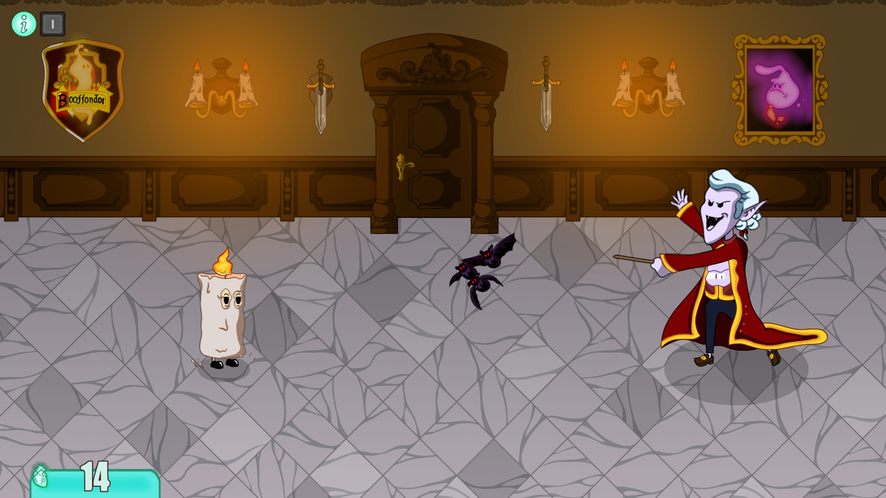
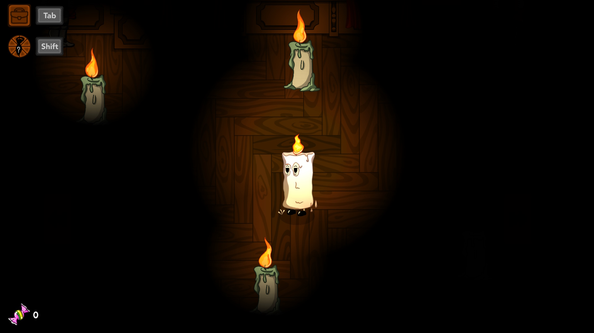
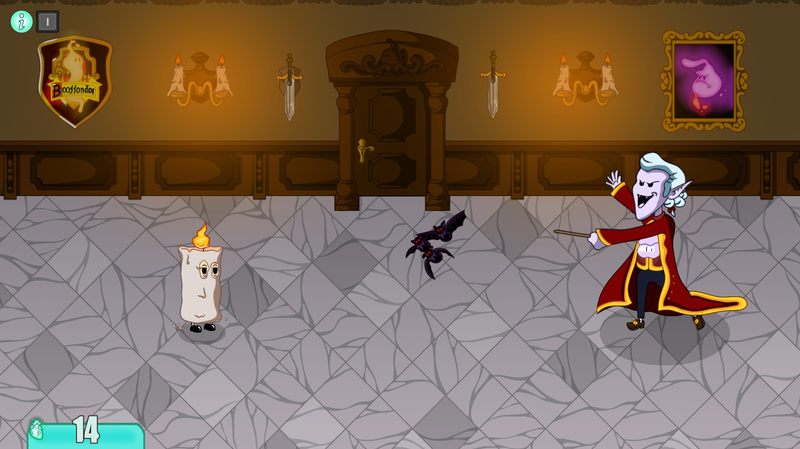
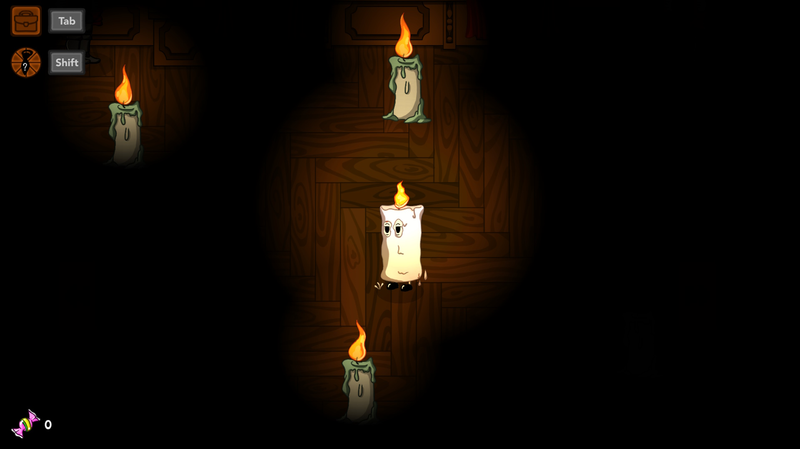

Tie-d to the Past
A 2D JRPG where you play as a salaryman depressed by his monotonous life. To cheer himself up, he decides to go to a party, and for that he needs the best tie he can find. He sets off in search of a store when he meets the gaze of a ghost wearing a superb tie, who promptly leaves for the abandoned mansion at the end of the street. Your goal is to get into the mansion and find the best tie of all time, but it's not going to be a typical mansion...
This project was made in C++ using the SFML library in 6 weeks during 2022 and 2023.
Screens

 



Trailer
Itch.io
Team
Programming
Enzo Berti
Dorian Delbos
Théo Gazengel
Dunkan Jadras
Olivier Maurin
David Thevenin
Graphics
Camille Andrieu
Kees De Heer
Nicolas Gonzalez